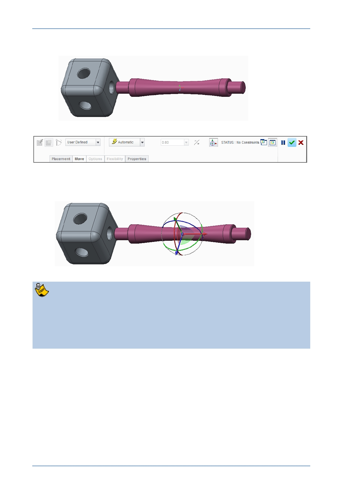

PTC Academic Program
The part will be attached to the cursor and the Assembly dashboard will open.
3. Locating the part temporarily, before final placement:
Move the mouse cursor until the strut is positioned just to the right of the cube,
then click in the graphics area to place it.
If you mistakenly middle-click but do not hold down the middle-mouse button and
move the mouse, the dashboard will close and the component placement will be
prematurely completed. To re-open the dashboard and continue constraining the
component, right-click the component in the Model Tree and select Edit
Definition from the pop-up menu. Engineers use many shortcuts to speed up
their work and middle-click is one that closes the dashboard!
© 2012 PTC
Creo Parametric 2.0 Primer
Page 70